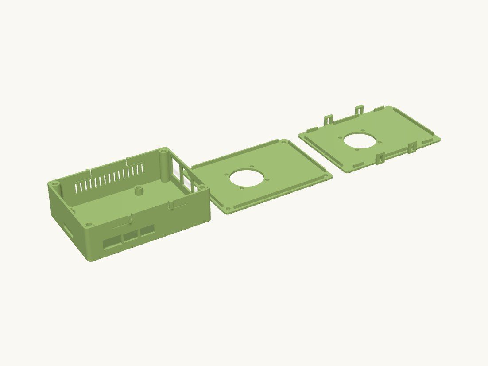

Work / Electronics

Technical details
Parts body — open-top rounded shell, four M2.5 heat-set standoffs at the Pi 5 hole pattern (Pi screwed down from above), four M3 heat-set bosses fused into the inner corners for the screw lid, connector windows for USB-C + 2x micro-HDMI (-Y wall), Ethernet + 2x USB-A (+X wall) and a microSD access window (-X wall), vertical exhaust vent slots on the +Y (GPIO) wall, four rubber-foot recesses underneath, and four cantilever snap latches cut into the top of the +/-Y walls (for lid_snap; harmless under lid). lid — screw lid: flat plate with a drop-in lip (square-notched around the corner bosses), four M3 clearance holes, 30 mm fan cutout + 4 x M3 fan screw holes centred over the SoC. lid_snap — snap-fit lid: same plate, lip and fan cutout, no screw holes; four skirt tabs hang outside the long walls, each with a window that the body's latch hook snaps into.
Snap latch design (mechanisms.cantilever_latch + mechanisms.latch_window) The latch component's orientation rule is "beam lying flat in the bed plane — never print the beam standing up". A finger hanging from a face-down lid would stand up, so the beams live on the BODY instead: each is a 12 x 6 mm strip of the wall at the rim, freed by a 1 mm slit below and at its tip, beam length along X, flexing in Y (bending stress runs along the layers). The hook points outward through a window in the lid's skirt tab. Closing: the tab's chamfered bottom edge pushes the hook inward ~1 mm until the window lines up and the hook springs out; the hook's underside then bears on the tab material under the window. Release: press the four hooks inward while lifting. The lid lip is removed over each beam so the deflected beam has room.
Hardware: Raspberry Pi 5 (bare or with a low-profile heatsink <= 7 mm), 4x M2.5 + 4x M3 brass heat-set inserts (CNC Kitchen / Ruthex standard length), 4x M2.5 x 6 screws (Pi), 4x M3 x 8 screws (screw lid only), one 30 x 30 x 10 mm fan with 4x M3 x 16 screws + nuts (or self-tappers). The fan is meant to hang under the lid blowing down onto the SoC; exhaust leaves through the +Y vents. It can equally be bolted on top of the lid — the cutout is the same either way.
Print orientation: body floor on the bed; lids top face on the bed (returned already flipped). Material: PETG for the body if you use the snap lid (the latch component is validated in PETG only; PLA fatigues); either PLA or PETG with the screw lid. All parts sit with z_min = 0.
Assumptions (user unavailable): * Corner bosses need ~5.6 mm between the board edge and the wall, so the cavity is 6.5 mm bigger than the PCB on every side — connectors are recessed ~8 mm from the outer face and the windows are sized for cable overmolds (USB-C 14.5 x 8.5, micro-HDMI 11.5 x 7.5). * Pi standoffs use a 1.2 mm insert wall (OD 6.4) instead of the 1.6 default to respect the component keep-out around the Pi's mounting holes; use STANDOFF_WALL = 1.6 if you prefer. * Pi 5 power button and PCIe/CSI/DSI connectors are not dimensioned on the official drawing and get no cutouts; the microSD window position is inferred (slot centred on the SD edge). * No Active Cooler: with the official cooler (13.7 mm tall) the lid fan would collide; raise HEADROOM to >= 28 or move FAN_X/FAN_Y. * Snap lid: latch defaults (12 x 6 x 1.6 beam, 1.2 hook, 30 deg entry, 90 deg retention) and root_fillet=0 because the beam root merges into the continuous wall. The latch is cut with the wall it belongs to, so the vents were shortened to stay 1.2 mm below the latch slits.
Parts
| Part | Size (mm) | Volume | Thinnest wall | Printability |
|---|---|---|---|---|
| body | 101.2 × 74.6 × 29.2 | 28.6 cm³ | 0.8 mm | passes |
| lid | 101.2 × 72.2 × 5 | 14.2 cm³ | 1.2 mm | passes |
| lid_snap | 101.2 × 75.9 × 10.3 | 14.4 cm³ | 0.73 mm | passes |
Engineering views
Downloads
- body.stepSTEP · 728 KB
- body.stlSTL · 1.2 MB
- lid.stepSTEP · 150 KB
- lid.stlSTL · 277 KB
- lid_snap.stepSTEP · 409 KB
- lid_snap.stlSTL · 191 KB
- pi5_fan_case.3mfwhole plate · 405 KB
Library parts used
Parametric components shared with the other designs; see the parts library.
| Component | What it does | Printed in |
|---|---|---|
Clearance holefasteners.clearance_hole | Negative (subtract me) clearance hole for a metric screw, with print oversize and optional counterbore or countersink. | PETG, PLA |
Heat-set insert bossfasteners.heat_set_boss | Cylindrical boss with a correctly sized pocket for a brass heat-set insert. | PETG, PLA |
Cantilever latchmechanisms.cantilever_latch | Cantilever snap-fit hook: flexing beam along +Z from z=0 with a ramped hook on the +X face at the tip. | PETG |
Latch windowmechanisms.latch_window | Negative (subtract me) rectangular window through a wall for a cantilever_latch hook to snap into. | PETG |
Corner holespatterns.corner_holes | Four holes inset from the corners of a length x width rectangle (lid screws / corner bosses), centred on the origin. | PETG, PLA |
Fan mountpatterns.fan_mount | Axial fan four-hole pattern plus optional circular airflow cutout, centred on the origin. | PETG, PLA |
Raspberry Pi 5 mountpatterns.pi5_mount | Raspberry Pi 5 four-hole mount pattern (58 x 49 mm, M2.5) centred on the origin. | PETG, PLA |
Pi 5 port windowspatterns.pi5_port_cutouts | Raspberry Pi 5 connector windows for one board edge as a wall-plane sketch (x along the edge, y = height above PCB top). | not yet |
Raspberry Pi outlinepatterns.pi_board_outline | Raspberry Pi PCB outline (rounded rectangle) positioned to line up with the matching mount pattern. | PETG, PLA |
Box lidprimitives.box_lid | Flat lid for rounded_box with an inner lip that drops inside the walls; printed upside down (top face on the bed). | PETG, PLA |
Rounded boxprimitives.rounded_box | Open-top rounded rectangular shell (enclosure body) with floor, standing on z=0; outer dimensions given. | PETG, PLA |
Rubber-foot recessprimitives.rubber_foot_recess | Negative (subtract me) shallow recess to locate a stick-on rubber foot; top face at z=0, extends down. | PLA |
Vent slotsprimitives.vent_slots | Grid of rounded ventilation slots filling a rectangular area, centred on the origin (subtract from a wall). | PETG, PLA |
Source: models/pi5_fan_case · built 2026-09-09 13:43
Raspberry Pi 5 fan case
A ventilated Pi 5 enclosure with a 30 mm fan in the lid, in a screw-down or a snap-on version.
Brass inserts hold the board and the lid; vent slots run vertically so they print cleanly. Two lids are included so you can choose tools or no tools.
- Size
- 101 × 75 × 29 mm
- Print plate
- 212 × 158 × 29 mm
- Parts
- 3
- Filament (PLA)
- about 71 g
- Print time
- about 4.9 h
- Status
- Ready to print
Want it in another size, colour or material? Say so in the request: fitting it to your object is a $5 adjustment, and you see the revised design before it's printed.
Measure it, describe it, and we'll draw it.
Requests take a few minutes. You'll get the design and a price back before anything is printed.